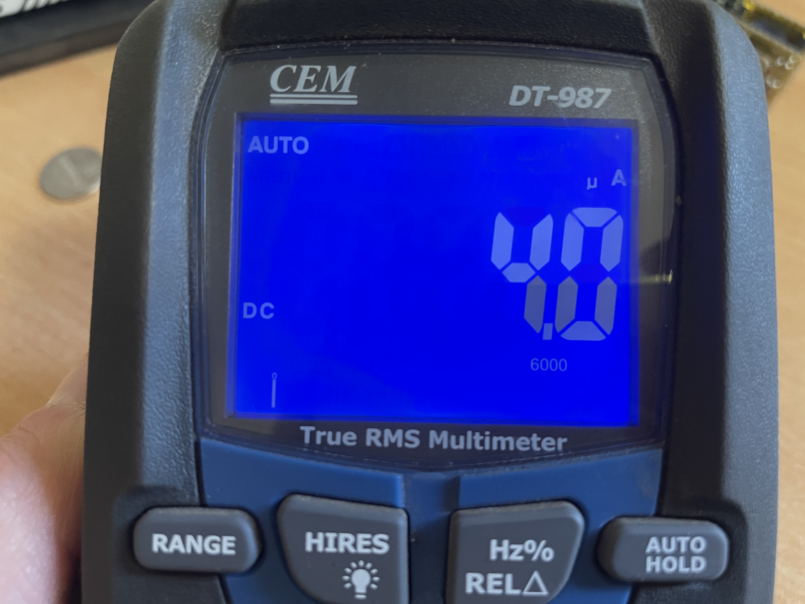

Energooszczędne węzły BLE
Monitorowanie temperatury i wilgotności | Zasilanie CR2032
Założenia projektu
Głównym celem było stworzenie bardzo kompaktowego i niezależnego energetycznie węzła rozgłoszeniowego BLE. Wyzwaniem była optymalizacja hardware'u i oprogramowania tak, aby zejść z poborem prądu do poziomu zaledwie ułamków mikroamperów (µA) podczas uśpienia. Pozwala to na długie miesiące pracy na jednej baterii pastylkowej, co w połączeniu z nadzorem napięcia na bieżąco, tworzy stabilny system telemetryczny.
Hardware i budowa
- Jednostka główna: Seeed Studio XIAO nRF52840
- Czujnik: SHT45 (precyzyjny pomiar, komunikacja I2C)
- Zasilanie: Gniazdo na baterię Energizer CR2032 3V na spodzie.
- PCB: Autorski układ typu "kanapka" (stack). Zaprojektowałem własne pady i użyłem złącz kołkowych, aby połączyć moduły w jedną, miniaturową kostkę. Przygotowałem różne warianty kolorystyczne soldermaski (zielony, czarny, żółty, niebieski).
Galeria montażu

Zmontowane jednostki. Widać porty USB-C od XIAO nRF52840 do flashowania. Różne kolory soldermaski pomagają w identyfikacji konkretnych węzłów.

Moduł rozebrany na warstwy. Na górze widać układ wyprowadzeń SHT45 (SDA, SCL, 3Vo, GND), na dole zlutowane złącza nRF52840.

Dolna warstwa zawierająca uchwyt na baterię pastylkową CR2032 wraz z wyprowadzonymi złączami goldpin.

Testy różnych rozwiązań zasięgowych – obok złożonych kostek znajduje się moduł z podpiętą zewnętrzną anteną elastyczną na złączu u.FL.